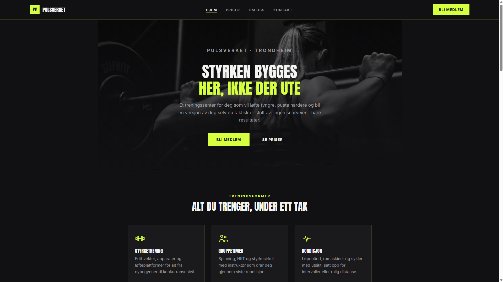

Webdesign & Utvikling
Jeg bygger nettsider
som jobber for deg
Aaserud WebDesign lager moderne, raske og brukervennlige nettsider for små og mellomstore bedrifter — fra idé til lansering.
Tjenester
Hva jeg kan hjelpe deg med
Webdesign
Skreddersydde, moderne nettsider tilpasset din bedrift og dine kunder.
Nettbutikk
Salgsklare nettbutikkløsninger med sikker betaling og enkel drift.
SEO & Synlighet
Bedre synlighet i søkemotorer, slik at de riktige kundene finner deg.
Vedlikehold & Support
Løpende oppfølging, oppdateringer og support etter lansering.
Om meg
Personlig oppfølging, profesjonelt resultat
Aaserud WebDesign startet med nysgjerrighet mer enn en stor forretningsplan. Jeg er selvlært og fortsatt relativt ny i bransjen, men det som begynte som et forsøk på å se om jeg kunne gjøre noe jeg synes er genuint gøy til en jobb, har fort blitt en ordentlig lidenskap for godt håndverk og fornøyde kunder.
Det jeg brenner mest for er design — å finne løsninger som ser bra ut og faktisk fungerer for deg som kunde. Jeg har også et ekstra hjerte for små og lokale bedrifter, som ofte ikke har tid eller budsjett til å prioritere nettsiden sin, men som fortjener å fremstå like proft som de store aktørene.
Jeg holder til på Grua, og tar gjerne oppdrag både lokalt og for kunder andre steder i landet. Siden jeg er ett menneske og ikke et byrå med mange ledd, får du alltid direkte kontakt med meg gjennom hele prosessen — fra første idé til ferdig nettside, uten mellomledd eller unødvendig byråkrati.
I praksis betyr det at jeg kombinerer design og teknisk utvikling selv, slik at du får en nettside som er rask, ser bra ut på alle enheter, og er enkel å finne på Google.
Prosjekter
Eksempler på hva jeg kan lage
Disse er demo-nettsider laget som eksempler på stil og kvalitet. Ekte kundeprosjekter kommer etter hvert.

Bakeri Grua
En generisk bakeri-nettside laget som eksempel — viser hvordan en varm, innbydende nettside for et lokalt bakeri kan se ut.
Se prosjektet
Frisør Johnsen
En generisk frisørsalong-nettside laget som eksempel — viser hvordan en innbydende nettside for en lokal frisør kan se ut.
Se prosjektet
Treningssenter
En generisk nettside for et treningssenter laget som eksempel — viser hvordan en energisk, innbydende nettside for et lokalt treningssenter kan se ut.
Se prosjektetKontakt
La oss snakke om ditt prosjekt
Send meg en melding, eller ta kontakt direkte — jeg svarer så raskt jeg kan.
- E-post oskar@aaserudweb.no
- Telefon +47 906 49 527